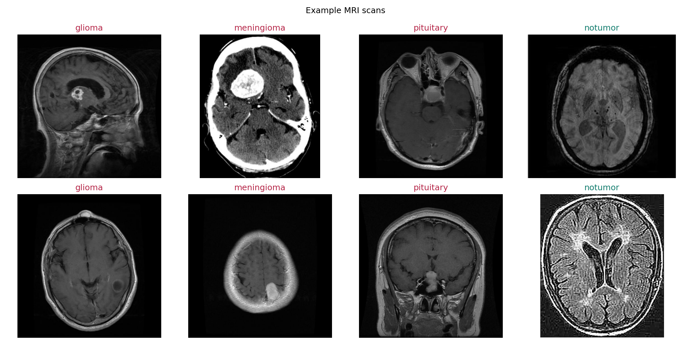
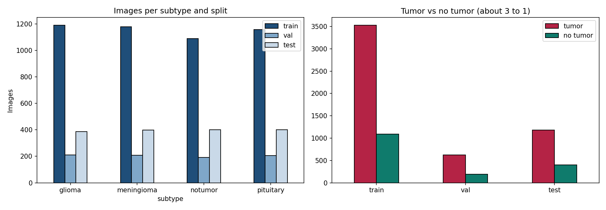
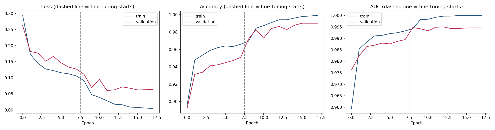
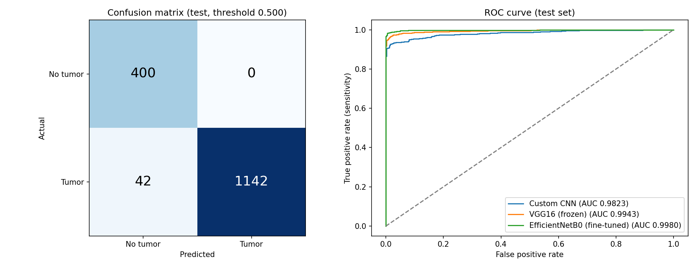
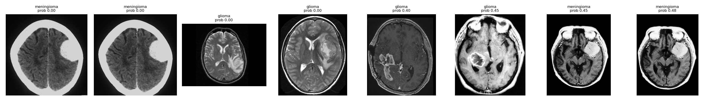

BS Computer Science · Deep Learning semester project
Project report
Brain Tumor Detection from MRI Scans
A fine-tuned EfficientNetB0 that tells tumor from no tumor, deployed as a web app that runs the model in the browser
StudentMuhammad Mujtaba Hassan
Roll numberSU92-BSCSM-F23-614
Live websitebrain-tumor-detection-sigma-eight.vercel.app
Report date1 November 2026
Student project for learning purposes. Not a medical device and not for diagnosis.
Abstract
This project builds a deep learning model that looks at a brain MRI scan and says whether a tumor is present. We used the public Brain Tumor MRI Dataset from Kaggle and grouped its glioma, meningioma and pituitary scans as Tumor and the rest as No tumor. Three models were trained and compared: a custom CNN, a frozen VGG16, and a fine-tuned EfficientNetB0.
EfficientNetB0 gave the best results on 1,584 unseen test scans: 97.35% accuracy, 96.45% sensitivity, 100% specificity and a ROC-AUC of 0.998, with zero false alarms. Duplicate images were removed before splitting, and the test set was used only once, so these scores are honest. The final model was exported to ONNX and runs inside the browser on a website hosted on Vercel. Scans never leave the user's device.
97.35%Accuracy (test)
96.45%Sensitivity: tumors caught
100%Specificity: healthy scans cleared
0.998ROC-AUC
Contents
1Introduction and problem
2Objectives
3Dataset
4Data cleaning and splitting
5Preprocessing and augmentation
6Models
7Training setup
8Choosing the decision threshold
9Results
10Explainability (Grad-CAM)
11Error analysis
12Model export and testing
13Web application and deployment
14Repository and how to run
15Limitations
16Future work
17Conclusion
18Links and references
1Introduction and problem
A brain tumor is an abnormal growth of cells in the brain. Doctors find tumors mainly with MRI scans, and reading these scans takes trained radiologists and time. A computer model that flags scans which likely show a tumor can help sort cases faster and act as a second check.
This project treats the task as binary classification: given one MRI image, output the probability that it shows a tumor. In screening, a missed tumor (false negative) is far more harmful than a false alarm (false positive). So the project tracks sensitivity and missed tumors, not only accuracy.
2Objectives
Train a model that separates tumor and no-tumor MRI scans with high sensitivity.
Compare a model built from scratch with two transfer-learning models.
Measure results honestly: no duplicate images across splits and a test set used only once.
Show where the model looks, using Grad-CAM heatmaps.
Deploy the model as a public website that anyone can try, with no server-side processing of images.
Provide a command-line script so evaluators can test the model on their own images.
3Dataset
We used the Brain Tumor MRI Dataset by Masoud Nickparvar on Kaggle (a secondary dataset). It has a Training and a Testing folder, each with four classes: glioma, meningioma, pituitary and notumor. The notebook downloads it automatically with kagglehub; the images are not stored in the GitHub repository.
Original class
Used as
Label
Glioma
Tumor
1
Meningioma
Tumor
1
Pituitary
Tumor
1
No tumor
No tumor
0
After grouping, tumor images outnumber no-tumor images by about 3 to 1. This imbalance is handled with class weights (Section 7).

Figure 1. Example scans from the training set, two per class.
4Data cleaning and splitting
Removing duplicates
Public datasets often contain the same scan more than once. If one copy is in training and another in testing, the model is tested on an image it has already seen and the score looks better than it really is. Every file was fingerprinted with an MD5 hash. Test images that also appear in training were dropped, and only one copy of each image was kept inside a split. 187 duplicate images were removed.
Splits
Train: 85% of the Training folder, used to learn the weights.
Validation: 15% of the Training folder (stratified by subtype), used for early stopping and to pick the decision threshold.
Test: the dataset's own Testing folder, used only once for the final score.
Split
Images
Used for
Train
4,614
Learning the model weights
Validation
815
Early stopping, threshold choice
Test
1,584
Final score only
Total
7,013
after removing 187 duplicates
The test set has 1,184 tumor scans (386 glioma, 398 meningioma, 400 pituitary) and 400 no-tumor scans.

Figure 2. Left: images per subtype and split. Right: tumor vs no tumor in each split (about 3 to 1).
5Preprocessing and augmentation
Every image is decoded as 3-channel RGB and resized to 224 × 224. Pixel values stay in the 0 to 255 range. Each model does its own scaling inside the network, so the Python script and the website only need to resize the image. This removes the most common deployment bug, where preprocessing in the app differs from training.
Training images get random augmentation so the model sees more variety and overfits less. Validation and test images are not augmented.
Augmentation
Setting
Horizontal flip
random
Rotation
up to ±5% of a full turn (about ±18°)
Zoom
up to ±10%
Translation
up to ±5% horizontally and vertically
Contrast
up to ±15%
The input pipeline uses tf.data with caching, shuffling and prefetching for fast training on a Colab T4 GPU.
6Models
Three models were trained on the same data so they can be compared fairly. All three end in a single sigmoid output named tumor_probability.
6.1 Custom CNN (baseline 1)
A network built from scratch: input rescaling to 0–1, then four blocks of Conv2D (32, 64, 128, 256 filters, 3×3) + BatchNorm + ReLU + MaxPooling, then Global Average Pooling, a Dense layer of 128 units, Dropout 0.4, and the sigmoid output. Global Average Pooling replaced the Flatten layer of the original design; Flatten added millions of weights and caused overfitting.
6.2 VGG16, frozen (baseline 2)
VGG16 pretrained on ImageNet with all its layers frozen. On top: Global Average Pooling, Dense 256 with ReLU, Dropout 0.5, and the sigmoid output. Only the new head is trained.
6.3 EfficientNetB0, fine-tuned (final model)
EfficientNetB0 pretrained on ImageNet, followed by Global Average Pooling, Dropout 0.3 and the sigmoid output. It is more accurate than VGG16 while being about four times smaller (around 16 MB), so it loads quickly in a browser. Training has two phases:
Head only: the pretrained base is frozen and only the new top layer learns (learning rate 1e-3).
Fine-tuning: the whole network is unlocked and trained with a very small learning rate (3e-5) so it adapts to MRI scans without forgetting what it already knows. BatchNorm layers stay frozen to keep fine-tuning stable.
InputRGB 224×224, pixels 0–255
EfficientNetB0ImageNet weights, scaling built in
Global Avg Pool1,280 features
Dropout 0.3reduces overfitting
Dense 1, sigmoidtumor probability 0–1
7Training setup
Setting
Value
Framework
TensorFlow 2.21.0, Keras 3.13.2 (Google Colab, T4 GPU)
Image size / batch size
224 × 224 / 32
Loss
Binary cross-entropy
Optimizer
Adam (1e-3 for the head and baselines, 3e-5 for fine-tuning)
Class weights
Inverse class frequency, so the model does not just favor "tumor"
Metrics tracked
Accuracy, AUC, recall, precision
Early stopping
On validation AUC, best epoch restored
Learning-rate schedule
Reduce by 0.3× when validation loss stalls for 2 epochs
18 in total: 8 head + 10 fine-tune (early stopping)
Random seed
42
In the final epochs the model reached 99.0% validation accuracy, 0.995 validation AUC and 99.5% validation recall.

Figure 3. EfficientNetB0 training curves. The dashed line marks the start of fine-tuning.
8Choosing the decision threshold
The model outputs a probability from 0 to 1. The usual cut-off is 0.5, but for screening we want to miss as few tumors as possible. For each model we picked the highest threshold that still catches at least 98% of tumors on the validation set, capped at 0.5. The test set was not used for this choice.
For EfficientNetB0 and VGG16 this rule gave 0.5. For the custom CNN it gave 0.1674, which caught more tumors than 0.5 would (122 missed instead of 190).
9Results
9.1 Model comparison on the test set (1,584 scans)
Model
Threshold
Accuracy
Sensitivity
Specificity
Precision
F1
ROC-AUC
Missed tumors
False alarms
Custom CNN
0.1674
92.23%
89.70%
99.75%
99.91%
94.53%
0.9823
122
1
VGG16 (frozen)
0.5
96.40%
95.52%
99.00%
99.65%
97.54%
0.9943
53
4
EfficientNetB0 (fine-tuned)
0.5
97.35%
96.45%
100.00%
100.00%
98.19%
0.9980
42
0
EfficientNetB0 is best on every measure. Compared with the custom CNN it misses 80 fewer tumors, and compared with VGG16 it misses 11 fewer tumors and raises no false alarms.
9.2 Confusion matrix of the final model
Predicted no tumor
Predicted tumor
Actual no tumor
400 (TN)
0 (FP)
Actual tumor
42 (FN)
1,142 (TP)

Figure 4. Left: confusion matrix of EfficientNetB0 on the test set. Right: ROC curves of all three models.
9.3 Results by tumor type (final model)
Subtype
Test images
Correct
Correct %
Glioma
386
355
91.97%
Meningioma
398
387
97.24%
Pituitary
400
400
100.00%
No tumor
400
400
100.00%
All 42 missed tumors are gliomas (31) or meningiomas (11). Pituitary tumors and healthy scans were all classified correctly.
10Explainability (Grad-CAM)
Grad-CAM colors the parts of a scan that pushed the model toward its answer. It uses the gradients of the tumor probability with respect to the last convolutional feature maps of EfficientNetB0. When the hot spots sit on the tumor area, and not on the skull edge or text labels, it is evidence that the model learned real features.
Figure 5. Grad-CAM on eight test scans (two per class). Top row: original. Bottom row: where the model looked, with its tumor probability.
11Error analysis
The model made no false alarms on the test set. All errors are missed tumors. The figure below shows examples of these missed scans.

Figure 6. Examples of test scans the model got wrong.
Likely reasons:
Some gliomas are small or have low contrast against nearby tissue, so they look close to normal on a single slice.
Meningiomas near the skull edge can be confused with normal bright structures.
The model sees one 2D slice, not the full 3D scan, and has no patient history.
Lowering the threshold below 0.5 would catch more of these at the cost of some false alarms. The current setting already met the 98% validation recall target.
12Model export and testing
The trained model was saved in two formats:
File
Use
weights/brain_tumor_effnetb0.keras
Normal TensorFlow/Keras model (about 17 MB, optimizer state removed)
weights/brain_tumor_effnetb0.onnx
Same model in ONNX format; runs in the browser and in predict.py without TensorFlow
weights/config.json
Input size, threshold (0.5) and labels
The graph was frozen and converted with tf2onnx, which keeps EfficientNet's built-in normalization inside the file. Both files were then run on 32 test images to confirm that Keras and ONNX give the same outputs.
The user uploads an MRI image or clicks one of six sample test scans.
The browser resizes the image to 224 × 224 on a canvas and builds the input tensor.
ONNX Runtime Web (version 1.22.0, WebAssembly) runs the ONNX model directly in the browser.
The page shows the tumor probability and the Tumor / No tumor result.
Privacy: images are processed on the user's own device and are never uploaded anywhere.
What the site contains
A try-it panel with the six sample scans and an upload option.
Results section with the test scores and charts, read automatically from project.json (no numbers typed by hand).
Method section explaining data, model, training and the decision line.
Files section with links to GitHub, the Kaggle dataset, the model weights, the config and this report.
An animated background (a live neuron-field simulation) and author details with the Superior University logo.
llms.txt and structured data so search engines and AI agents can find the project links.
Deployment settings
Vercel serves the web/ folder as a static site: framework "Other", no install or build command, output directory web. Every push to the main branch on GitHub redeploys the site automatically. Training files, notebooks and large weights outside web/ are excluded with .vercelignore.
14Repository and how to run
brain-tumor-detection/
├── notebooks/brain_tumor_detection_colab.ipynb training (Google Colab)
├── predict.py command-line prediction
├── requirements.txt numpy, pillow, onnxruntime
├── weights/ .keras + .onnx + config.json
├── results/ charts and metric tables
├── report/ source of this report
└── web/ Vercel website (runs the model in the browser)
Train the model
Open the notebook in Google Colab and select a T4 GPU runtime.
Run all cells (about 30 to 40 minutes). QUICK_TEST = True runs a short smoke test first.
Unzip the downloaded project_outputs.zip into the repository.
Test the model from the command line
pip install -r requirements.txt
python predict.py path/to/image.jpg # one scan
python predict.py path/to/folder # every image in a folder
python predict.py path/to/Testing --eval # accuracy, sensitivity, specificity
python predict.py path/to/image.jpg --json # machine-readable output
predict.py uses only NumPy, Pillow and ONNX Runtime, so TensorFlow is not needed to run predictions.
15Limitations
The dataset is a public secondary collection. Images come from several sources with different scanners and quality, and patient-level information is not available, so two slices from the same patient could still fall in different splits.
The model works on single 2D slices, not full 3D MRI volumes.
It only answers tumor vs no tumor. It does not name the tumor type or show its exact boundary.
It was not tested on scans from a real hospital, so real-world accuracy may be lower.
Glioma is the hardest class (91.97% correct).
This is a student project for learning purposes. It is not a medical device and must not be used for diagnosis.
16Future work
Classify the tumor type (glioma, meningioma, pituitary) as a four-class problem.
Add segmentation to outline the tumor region.
Test on an external dataset from a different hospital or scanner.
Use 3D models on full MRI volumes.
Try larger backbones (EfficientNetB3, ConvNeXt) or ensembles to reduce missed gliomas.
Calibrate the probabilities so the score can be read as a true risk.
17Conclusion
A fine-tuned EfficientNetB0 detects brain tumors in MRI scans with 97.35% accuracy, 96.45% sensitivity, 100% specificity and a ROC-AUC of 0.998 on 1,584 unseen test scans. It beat both a custom CNN and a frozen VGG16. Careful data handling (duplicate removal, a separate validation set, a test set used once) makes these results trustworthy. The model is small enough to run in a web browser, and the live website lets anyone try it privately on their own device.